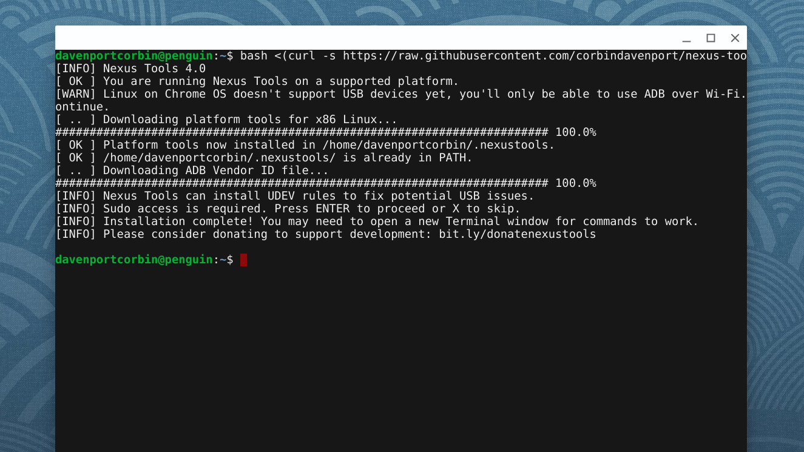

Nexus Tools is one of my oldest-running projects. It’s a script for installing ADB and Fastboot — two applications commonly used for fixing/updating Android devices — on Mac and Linux. I’ve finally gotten around to finishing version 4.0!
First, Nexus Tools now downloads the Android Platform Tools package straight from Google’s servers, instead of a GitHub mirror. When you run the installer, Nexus Tools downloads the zip file for your operating system, unzips it to a hidden folder in your home directory (~/.nexustools), and adds the folder to your path. In just a few seconds, you get everything you need to debug, fix, or repair any Android device.

Secondly, Nexus Tools now installs an adb_usb.ini file, so ADB can properly detect all Android devices over USB. The file is maintained by apkudo, and includes every imaginable vendor ID.
Previous versions of Nexus Tools installed a UDEV rules file, which ensured ADB and Fastboot could work properly on Linux systems. However, the file was horrendously out of date, so Nexus Tools now installs a version regularly updated by M0Rf30.
This release also includes a few other minor features and bug fixes. You can try it out by following the instructions on GitHub.